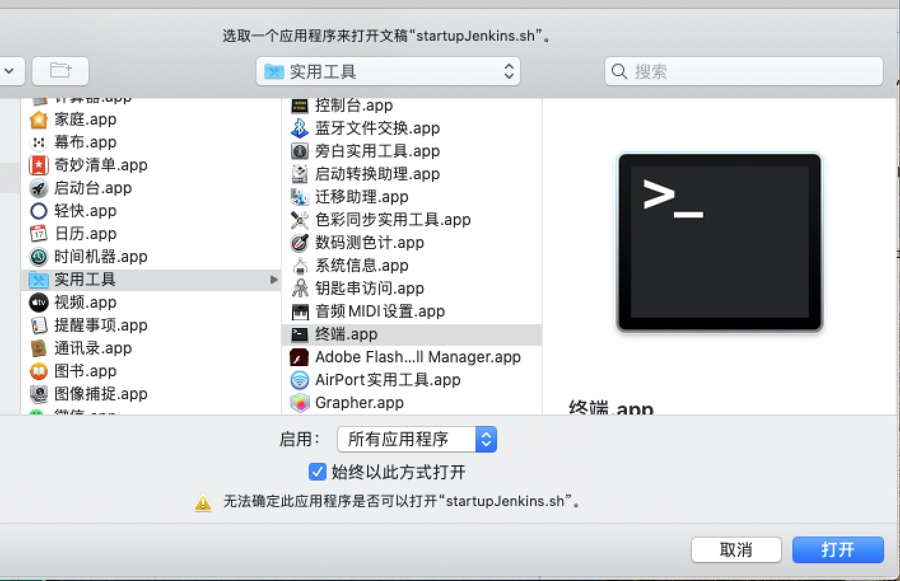
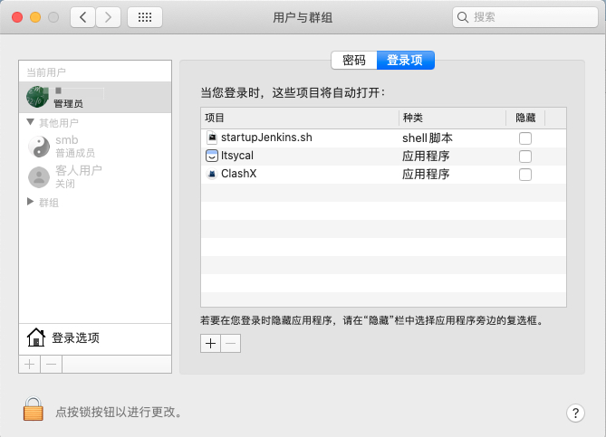
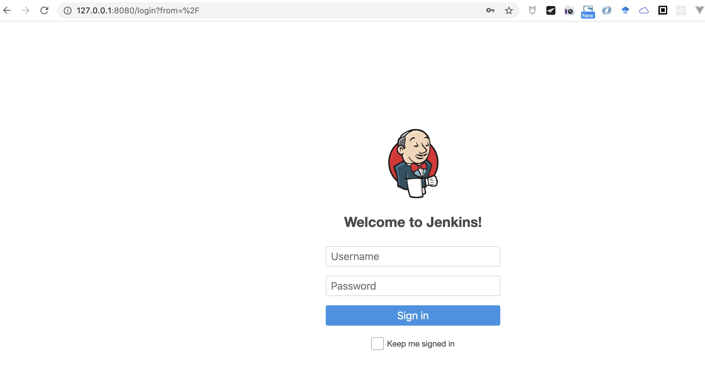

下载 Jenkins
下载 war 安装包 版本号 2.22.1 下载连接 Jenkins.war 重命名 为jenkins_2.222.1.war
存放路径 ~/Dev/bin/jenkins/jenkins_2.222.1.war
启动脚本
脚本内容
~/Dev/bin/jenkins/startupJenkins.sh
1 | port=8080 |
脚本添加权限
chmod 777 startupJenkins.sh
修改 startupJenkins.sh 文件的打开方式
右击 -> 打开方式 -> 其他 -> 实用工具 -> 终端

mac_jenkins_auto_start
添加开机启动项
偏好设置 -> 用户与群组 -> 登录项 -> 添加 -> 选择 startupJenkins.sh

mac_jenkins_auto_cmd_add
重启 Mac 测试
浏览器打开 http://127.0.0.1:8080

mac_jenkins_auto_start_success
![微信分享二维码]()